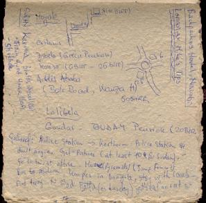
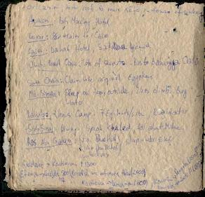
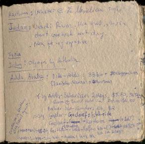

|
|
|
|
So waking up around 10:30 does not help someone want to leave early. But that was OK as well. I was able to finish talking to Mike, since he decided to stay in and not go to work, and was trying to help Steve work the brand new scanner, purchased the day before. Then eventually, it started to be close to 1PM, and I knew I wanted to be in Eastleigh at around 2PM so I started to get nervous. and I was nervous not only because of the time. It was mainly because I did not want to leave.
|  |
|  |
|  |
Mike was making fun of me, which was a good thing. He was making fun of my ideals, and of how I had packed. As a matter of fact, he is right: my ideals are not ideal for this kind of traveling, and my packing is also not ideal for like go around and visit sort of travel. Just to see things, it is a very good idea to have a sleeping bag, some clothes, medication kit, and beauty case. That's it. All the rest is way too much. Also the tent is too much in a continent like this, where you can find hotel rooms for 2USD/night.. Unless you wanna go out in nature and camp, but then you also need a guide of some sort)having a tent is just a big heavy thing. Not advisable. Also the cooking stuff. I have the impression that I am not going to need it. I might need it this summer back in Italy, but not for the moment., down there, where I am traveling from one city to the next. Yes I decided to just travel and not see. I don't' feel packed properly for seeing and driving around. Also, I do not have the time to do so. I mean, we all know I could take the time, but I prefer not to. I want to spend time in Italy, and my goal on this trip was to travel north, to go home via land, so that is what I should be doing. Then I also have to stop in Israel, so I better hit the road.
After all this thinking, I get my stuff ready, and prepare to hop on a cab and go to Eastleigh to catch a truck to Moyale. Everyone was telling me that this was going to be the hard part of the trip, but I wasn't not scared outside, rather I was scared inside.
Once in Eastleigh, I find a truck, hop on it, and pay 1000Ksh to stay on the top, with the cargo, which happened to be a shit-load of school notebooks. After having waited for about 1 hour for a tire to arrive, a new one that is, we finally leave, and stop at the gas station where the driver gets convinced by the rowdy (a kid that works for the truck driver, and takes care of all the minute things like cleaning up, , changing tires, and such) to change the tire before we leave for Isiolo, so we do. In the process of changing it, somehow, the air tube gets pinched. The theory is that the rowdy screwed up and pinched the tube while putting it in. But I don't think this is what happened: the tube was not pinched where you would think the rowdy could have pinched it. I think they tire was sole with a an air tube that was already pinched. At any rate, we wasted about 4 hours at the gas station, because of this tire. The truck equipage was very incompetent, and were doing most things wrong, braking a a few valves of the air tube, and other things.
Then we finally took off. and the trip to Isiolo was OK, but very cold. The road was a tarmac (as they say here) road, and we ended up sleeping in a dodgy hotel in Isiolo. I got many many cold, much of it, because there were too many people on the truck and my stuff was behind all of them. As I didn't want to disturb them, I didn't go for my stuff. But I soon felt the consequences of this decision as I caught a cold.
But the bed was OK, a small room, looked like a jail cellar, and I sort of slept OK, but I knew I could not sleep long since we were going to take off at 6am.
| Previous | Home | Next |
{kind=link}
{kind=link}
{kind=link}